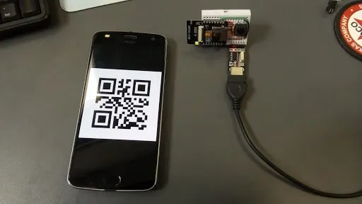

Leitor de QR Code com ESP32-CAM
Objetivo: registrar informações a partir da
leitura de um QR Code.
Tecnologias:
ESP32-CAM, servidor Python e banco de dados.
Funcionamento: a ESP32-CAM fotografa o QR Code; a imagem é enviada para um
servidor em Python, que lê as informações e as armazena no banco
de dados.
